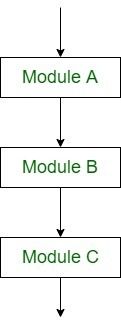

Sequential Logic (Sequential Flow)
|

|
Sequential logic as the name suggests follows a serial or sequential flow in which the flow depends on the series of instructions given to the computer. Unless new instructions are given, the modules are executed in the obvious sequence. The sequences may be given, by means of numbered steps explicitly. Also, implicitly follows the order in which modules are written. Most of the processing, even some complex problems, will generally follow this elementary flow pattern.
|
$x=1; //instruction 1
echo $x; //instruction 2
$x=$x+1; //instruction 3
echo $x; //instruction 4
...